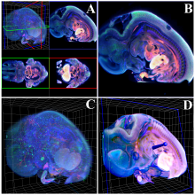
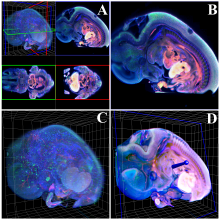

Illustrating Polymerization using Three-level Model Fusion
Research in cell biology is steadily contributing new knowledge about many different aspects of physiological processes like polymerization, both with respect to the involved molecular structures as well as their related function. Illustrations of the spatio-temporal development of such processes are not only used in biomedical education, but also can serve scientists as an additional platform for in-silico experiments. In this paper, we contribute a new, three-level modeling approach to illustrate physiological processes from the class of polymerization at different time scales. We integrate physical and empirical modeling, according to which approach suits the different involved levels of detail best, and we additionally enable a simple form of interactive steering while the process is illustrated. We demonstrate the suitability of our approach in the context of several polymerization processes and report from a first evaluation with domain experts.
BioVis 2014 Information

 
